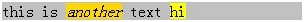

SD9016: Firefox 不支持 DOM 对象的 insertAdjacentHTML 和 insertAdjacentText 方法
标准参考
无。
问题描述
Firefox 不支持 DOM 对象的 insertAdjacentHTML insertAdjacentText 方法。
造成的影响
使用这两个方法将在 Firefox 浏览器内报错。
受影响的浏览器
| Firefox |
|---|
问题分析
insertAdjacentHTML 方法
insertAdjacentHTML 方法是比 innerHTML、outerHTML 属性更灵活的插入 HTML 代码的方法。它可以实现在一个 DOM 元素的前面、后面、第一个子元素前面、最后一个子元素后面四个位置，插入指定的 HTML 代码。不是 W3C 标准的 DOM 方法。
这个方法最初是由 IE4.0 以上版本实现，为私有特性。详细内容请参见 MSDN 说明：insertAdjacentHTML Method。
W3C 近期在 HTML5 草案中扩展了这个方法，更多详细的信息，请参见 W3C HTML5 草案：3.5.7 insertAdjacentHTML()。
目前，主浏览器中，只有 Firefox 不支持 insertAdjacentHTML 方法。
<script type="text/javascript">
window.onload = function() {
var ps = document.getElementById("one");
try {
ps.insertAdjacentHTML("beforeend", "<span style='background:yellow;'>hi</span>");
} catch(err) {
document.getElementById("info").innerHTML = err;
}
}
</script>
<p id="one" style="background:silver; width:300px;">
this is
<i style="width:100px; background-color:gold;">another</i>
text
</p>
<div id="info"></div>
测试用例中，页面加载的时候，会执行 one 的 insertAdjacentHTML方法。
如果执行期间有JS错误，错误信息会在 info 中输出。
如果执行成功，one 元素内容的最后会被加上一个有黄色背景的文本“hi”。
在各浏览器下的截图：
| Firefox | IE6 IE7 IE8 Chrome Safari Opera |
|---|---|
 |
 |
可见，只有 Firefox 下不支持 insertAdjacentHTML 方法。
insertAdjacentText 方法
insertAdjacentText 是比 innerText、outerText 属性更灵活的插入文本的方法。它可以实现在一个 DOM 元素的前面、后面、第一个子元素前面、最后一个子元素后面四个位置，插入指定的文本。不是 W3C 标准的 DOM 方法。
这个方法是 IE 私有特性。详细内容请参见 MSDN 说明：insertAdjacentText Method。
至今为止 W3C 的 HTML5 草案还未涉及此方法。
目前，主浏览器中，只有 Firefox 不支持 insertAdjacentText 方法。
<script type="text/javascript">
window.onload = function() {
var ps = document.getElementById("one");
try {
ps.insertAdjacentText("beforeend", "<span style='background:yellow;'>hi</span>");
} catch(err) {
document.getElementById("info").innerHTML = err;
}
}
</script>
<p id="one" style="background:silver; width:300px;">
this is
<i style="width:100px; background-color:gold;">another</i>
text
</p>
<div id="info"></div>
- 测试用例中，页面加载的时候，会执行 one 的 insertAdjacentText 方法。
- 如果执行期间有 JS 错误，错误信息会在 info 中输出。
如果执行成功，one 元素内容的最后会被加上文本 “<span style='background:yellow;'>hi</span>”。
在各浏览器下的截图：
| Firefox | IE6 IE7 IE8 Chrome Safari Opera |
|---|---|
 |
 |
可见，只有 Firefox 下不支持 insertAdjacentText 方法。
解决方案
在 Firefox 中，可通过扩展 HTMLElement 的原型 (prototype) 来实现这两个方法：
if (typeof(HTMLElement) != "undefined") {
HTMLElement.prototype.insertAdjacentElement = function(where, parsedNode) {
switch (where) {
case "beforeBegin":
this.parentNode.insertBefore(parsedNode, this);
break;
case "afterBegin":
this.insertBefore(parsedNode, this.firstChild);
break;
case "beforeEnd":
this.appendChild(parsedNode);
break;
case "afterEnd":
if (this.nextSibling)
this.parentNode.insertBefore(parsedNode, this.nextSibling);
else
this.parentNode.appendChild(parsedNode);
break;
}
}
HTMLElement.prototype.insertAdjacentHTML = function(where, htmlStr) {
var r = this.ownerDocument.createRange();
r.setStartBefore(this);
var parsedHTML = r.createContextualFragment(htmlStr);
this.insertAdjacentElement(where, parsedHTML);
}
HTMLElement.prototype.insertAdjacentText = function(where, txtStr) {
var parsedText = document.createTextNode(txtStr);
this.insertAdjacentElement(where, parsedText);
}
}
参见
知识库
相关问题
测试环境
| 操作系统版本: | Windows 7 Ultimate build 7600 |
|---|---|
| 浏览器版本: | IE6 IE7 IE8 Firefox 3.6.8 Chrome 6.0.472.11 dev Safari 5.0.1 Opera 10.60 |
| 测试页面: | insertAdjacentHTML.html insertAdjacentText.html |
| 本文更新时间: | 2010-08-02 |
关键字
insertAdjacentHTML insertAdjacentText 插入